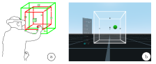
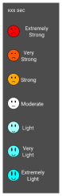
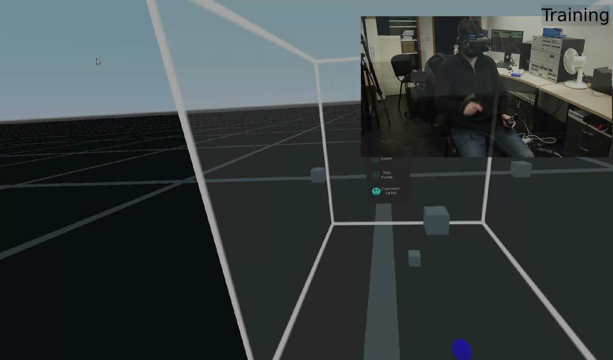
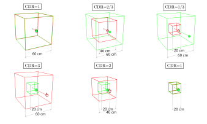
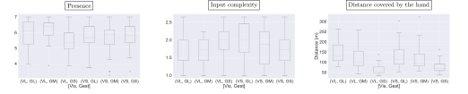
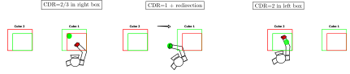

The Effect of Control-Display Ratio on User Experience in Immersive Virtual Musical Instruments
Abstract
Virtual reality (VR) offers novel possibilities of design choices for Digital Musical Instruments in terms of shapes, sizes, sounds or colours, removing many constraints inherent to physical interfaces. In particular, the size and position of the interface components of Immersive Virtual Musical Instruments (IVMIs) can be freely chosen to elicit large or small hand gestures. In addition, VR allows for the manipulation of what users visually perceive of their actual physical actions, through redirections and changes in Control-Display Ratio (CDR). Visual and gestural amplitudes can therefore be defined separately, potentially affecting the user experience in new ways. In this paper, we investigate the use of CDR to enrich the design with a control over the user perceived fatigue, sense of presence and musical expression. Our findings suggest that the CDR has an impact on the sense of presence, on the perceived difficulty of controlling the sound and on the distance covered by the hand. From these results, we derive a set of insights and guidelines for the design of IVMIs.
Author Keywords
Virtual Reality, Control-Display Ratio, Fatigue, Immersive Virtual Musical Instruments
CCS Concepts
•Applied computing → Sound and music computing; Performing arts; •Human-centered computing → Virtual reality;
•Human-centered computing → User studies;
Introduction


Experimental setup: (left) Seated participant with VR headset : in green the box, markers and cursor that they see; in red the limits of the reduced physical gestures that they actually perform in the case of a CDR<1. (right) what participants see in the headset.
Immersive Virtual Musical Instruments [1] (IVMIs) remove some of the physical constraints of musical interface design such that the weight and size of an instrument. In particular, they allow for placing various controllers freely around the musician. These controls can also be activated by different gestures, which can range from small subtle movements to large amplified ones although with the same musical result. Most of the time, such interaction gestures mimic real-world interaction movements.
While in the real, non digital world, musicians have to express expertise on an instrument that provides limited flexibility on its form factor, many parameters can be modified on IVMIs, leading to new appropriation opportunities. More specifically, design choice may impact various components of the user experience with the instrument, such as fatigue [2], difficulty [3], engagement and musical expressiveness ([4]; [5]), resolution of musical controls [6] or transparency for the audience ([7]; [8]). The choice of gestures, of their amplitude and of the interface composition must therefore be carefully considered.
Beyond potentially increasing the diversity of gestures, visual immersion also allows for controlling how physical gestures are perceived visually in the virtual environment. This enables illusions such as redirected walking [9], redirected manipulation [10] or visio-haptic illusions ([11]; [12]).
Generally these illusions involve changes in the Control-Display Ratio (CDR). For a CDR above 1, gestures (control) are amplified compared to the visual feedback (display) while for a CDR below 1, gestures are reduced. They can be applied to head rotation in the case of redirected walking or to hand and finger positions for redirected manipulation. These redirections can be used to improve the user feedback and therefore their sense of presence, to expand the interaction possibilities which can otherwise be constrained by physical limitations and so on.
We believe that changes in the Control-Display Ratio (CDR) could also be used in the context of musical interaction to enrich the user experience.
In this paper we investigate how different combinations of visual and gestural amplitudes affect musical practice in Immersive Virtual Musical Instruments, by measuring perceived arm fatigue, presence, agency and perceived expressiveness.
We provide the community with insights and guidelines for the design of IVMIs that take advantage of such techniques.
Related work
In this section, we review previous work that investigates control-display ratio, musical gestures amplitude, perceived arm fatigue and immersive virtual musical instruments.
CDG / CDR / Remapping
Control-Display Gain or Control-Display Ratio or remapping has been an important subject of research since the early work in Human-Computer Interaction. In 2D interfaces, dynamic gains define the relation between user movement and cursor movement, using a function defined over user movement speed. It is proved to improve the performance in selection tasks by adapting the pointer speed according to the speed of gesture [13]. 3D selection techniques also rely on the same principle to increase the efficiency when interacting in virtual environments. Some techniques adapt the control-display ratio depending on hand position, such as the Go-go technique [14], resulting in a non-linear mapping between the movements of the physical and virtual hands.
Redirections / CDR manipulations
Control-Display Ratio can also be used to alter the perception of the user during interactions. As shown in previous studies, the variations of CDR can impact the perception of the mass of a real object [11]. This object will be perceived significantly lighter if the CDR is below 1. Other research focused on the use CDR to limit the physical interaction area in real walking techniques ([9]; [15]) or to provide haptic feedback using tangible props during manipulation [10]. The former have been able to reduce the physical walking zone by 14% compared to the virtual area [15]. The latter managed to make participants believe that they were manipulating different objects in the virtual world while they were interacting with a single physical object [10]. Visio-haptic redirections can also be used to provide haptic feedback on visual shapes of various sizes with a fixed size haptic device [12].
Gestures, CDR and Fatigue


Borg CR10 of perceived fatigue used during experiment.
Previous research has mostly focused on the impact of fatigue on gesture amplitude, showing that the amplitude of elbow positions decreases when fatigue increases [16], as does the general movement amplitude [17]. However, Hincapiè Ramos et al. [2] found that a large interaction plane will produce more arm fatigue than a small one. In the same way, the study of the impact of Control-Display Ratio on fatigue and game experience during a session of fishing game [18] showed that for a reduced gesture (CDR=0.1) participants perceived less arm fatigue but also less flow and presence in the game. The Borg scale of Perceived Exertion [19] is a widely used measurement To collect the perceived arm fatigue in HCI. It has also been used to evaluate new metrics [2]. One advantage of this scale is that it takes the fitness level of the participant into account [20]. In this paper, we use the Borg CR10 Scale [21], shown in Figure 2. In order to retrieve a continuous measurement of fatigue, we used an interface with which participants were able report their fatigue at any time during the task.
Amplitude of Musical Gestures
Significant research has investigated the impact of gestural amplitude in DMIs. Bin et al. study the influence of gesture size on the audience experience [8]. Their results suggest that an instrument that elicits larger gestures is significantly more interesting and enjoyable for spectators. Jensenius et al. [22] explore the use of micro-movements in the control of sound parameters. They notably show that micro-movements can correctly be felt by the performer. According to Mice & McPherson et al. [23], while large DMIs result in an increased engagement of the musician’s body, their exact influence on the performance requires further study. Finally, Gillian et al.[24] suggest that the use of large gestures to control IVMIs can cause arm fatigue if the musician needs to reach notes too high or too far and if they have nothing to rest their arm on during the interaction.
Gestures in immersive instruments
A great number of IVMIs have been developed in the past years. Serafin et al. provide a comprehensive review of these instruments [1]. Recent research has shown the interest of virtual reality for the design of instruments in which elements of the interface can be placed freely around the musician, leading to various gestural amplitudes. For example, Wakefield et al. [25] describe a VR implementation of a modular synthesizer, insisting on the ease of re-arranging modules in space so that they are comfortably within reach of the musicians. In addition, these virtual 3D widgets can be modified to change their behaviour and the gestures that they elicit. For instance, Berthaut et al. [6] describe virtual sliders called Tunnels which modify graphical parameters of audiovisual objects passed through them and in turn the associated sound parameters. These virtual widgets can be stretched in order to increase the control resolution, i.e. the number of parameters values reachable while moving an object through them. This results in larger visual and gestural amplitudes and in a higher accuracy of control.
However, to our knowledge, no research has been conducted on the use of Control-Display Ratio in IVMIs or more generally on its impact on DMIs.
Contribution
In this paper, we investigate changes in Control-Display Ratio in the context of Immersive Virtual Musical Instruments. We describe an experiment in which we measure the effect of amplifying or reducing the gestures performed when interacting with two sizes of virtual controls, on multiple aspects of the user experience, i.e. presence, perceived arm fatigue and perceived musical expression. From the results, we derive a number of insights and opportunities in the use of CDR in IVMIs.
Experiment

▶Short illustration of the different conditions.
We conducted an experiment to evaluate the effect of control-display ratio on presence, perceived arm fatigue and musical expression in an immersive virtual musical instrument. In particular, we are interested in determining how these aspects would be impacted by variations between the visually perceived gestures and the physically performed gestures.
Due to the COVID-19 pandemic, this experiment was conducted remotely. Participants were recruited through mailing-lists and forums among users who had access to a VR headset. They then downloaded the experiment software and performed the task while on a videoconferencing session with one of the authors.
Video 1 is a short video that shows the different parts of the experiment.
Design


Visual and gestural box sizes : (top row) Large visual box (60cm) with the three gestural sizes (a:60cm, b:40cm, c:20cm), (bottom row) Small visual box (20cm) with the three gestural sizes (d:60cm, e:40cm, f:20cm).
The experiment used a 2 × 3 within-subjects design for the factors: visual box size and gestural box size. Visual box size is the size of the visually perceived virtual box in which the interactions are performed and covers two conditions: visu-large (60cm×60cm×60cm) and visu-small (20cm×20cm×20cm). Gestural box size corresponds to the volume of physical movements required to move the cursor inside the visual box and covers three conditions: gest-large (60cm×60cm×60cm), gest-medium (40cm×40cm×40cm) and gest-small (20cm×20cm×20cm). These three sizes were chosen to be accessible to participants without the need to move from their chair, i.e. while they remained seated. They could use their upper body to accompany the movement if needed. All boxes were centred on the same position, i.e. x=0cm, y=120cm, z=−60cm. In Figure 3, we show the different conditions for both visual box and gestural box sizes.
Stimuli
We designed an immersive virtual musical instrument in the form of a 3D mixer. It consists in a virtual box which contains 6 markers (see Figure 1). Each marker represents an audio track. Inside the box, the user moves a virtual 3D pointer. Individual gains of the tracks are mapped to the inverse of the distance between the pointer and the corresponding markers, with a small solo zone around the markers. We also mapped the master gain to the pointer movement speed in order to force the user to remain in motion.
We then created 7 musical presets, i.e. sets of musical patterns, each composed of the six following musical tracks: drums, percussion, long bass sound, short bass sound, long lead sound, short lead sounds. In order to avoid biases, the presets were chosen to be sufficiently similar (same tempo of 110 bpm and same tracks) but different enough (different patterns and sounds), and they were counterbalanced between participants and conditions.
The result is a spatialized mixer where users have to move to maintain the sound and can explore different combinations of tracks through different trajectories inside the box. It forces users to be in motion at all times and to try gestures and trajectories at various positions in space and with various amplitudes.
Participants
Twenty participants (19 males, 1 female) volunteered to take part in our experiment. They were aged between 21 and 42 years (mean=27.5, s.d=5). Fourteen participants were right handed and six were left handed. Four participants played a musical instrument frequently, ten played one occasionally, five had already played an instrument at least one time and the last one had never played one.
Eight participants defined themselves as VR experts, four participants used VR frequently, four others occasionally, two had already experienced VR at least one time and the two last had never tested VR. The headsets used by the participants were : 6x Oculus Quest 2, 1x Oculus Quest 1, 2x Oculus Rift S, 7x Valve Index, 2x HTC Vive, 1x HTC Cosmos and 1x Samsung Windows Mixed Reality.
Procedure
List of questions asked in addition to the Adaptation/Immersion part of the presence questionnaire. | |
Label | Question |
|---|---|
Presence | Average result of the Adaptation/Immersion part of the presence questionnaire [26]. |
Fatigue | How tiring did you find this task? (0.5=Extremely Light, 10=Extremely Hard) |
Output | How would you describe the diversity of the sounds you obtained? (1=Not diverse at all, 7=Very diverse) |
Input | How difficult was it to control the sound? (1=Not difficult at all, 7=Very difficult) |
Freedom | How would you describe the diversity of the gestures that you made? (1=Not diverse at all, 7=Very diverse) |
Expressiveness | How would you describe the musical expressiveness of the system? (1=Not expressive at all, 7=Very expressive) |
Agency | To what degree did you feel in control of the sound? (1=Not in control at all, 7=Very in control) |
Before starting the application, participants were instructed to sit on a chair with a clear area in front of them so that they could avoid physical collisions. They were instructed to ensure that they did not have armrests that could hinder their movements and were told not to use them for resting during the task if they had any. Finally, they were instructed to calibrate the ground and the centre of their headset so that they were all in approximately the same position relative to the interaction zones.
After answering a short demographic questionnaire, the experiment task was explained. The participant then began the experiment.
We proceeded in two phases: a training phase followed by the experiment phase. In both phases, participants were instructed to try to find as many sound variations as possible while keeping their dominant arm in movement to continuously produce sound. In parallel they had to use their non-dominant hand to report their perceived arm fatigue on the Borg scale. This scale was displayed on a window that appeared every 15 seconds in front of the participant behind the interactive cube. The participants reported their perceived arm fatigue by using the joystick on the controller of their non dominant hand (upwards to increase and downwards to decrease). They were also informed that each trial would last 3 minutes and that they would have a break to avoid the accumulation of arm fatigue. After each trial they had to complete a questionnaire composed of the Adaptation/Immersion part of the presence questionnaire [26] and additional questions on their final level of fatigue and on the following components of musical expression: agency, input complexity, output complexity, player freedom [27] and general expressiveness. Table 1 provides the list of corresponding questions. At the end of the questionnaire, they were instructed to rest as much as possible in order to reach their initial level of fatigue to avoid fatigue accumulation between conditions. We also recorded the hand positions during each task, in order to retrieve the total distance covered by the hand.
The training phase was designed so that participants would familiarize themselves with the task without creating a learning or order effect. Therefore, all participants performed a first trial in a condition which was not part of the ones we wanted to compare. More specifically, in this training phase, both visual and gestural box sizes were of 40cm×40cm×40cm. This allowed participants to understand the relation between their movements and the sound, and to get used to reporting their level of fatigue on the Borg scale.
In the experiment phase, participants then successively performed the task under the six conditions described above. The order of conditions was counterbalanced across participants and the sound presets across participants and conditions, in order to avoid an order effect on fatigue or engagement.
Hypotheses
We formulated the following hypotheses on the effect of CDR on the user experience. Firstly, we thought that combining a small gestural box and a large visual box would produce more fatigue but that it could also be felt as more expressive. Secondly, we hypothesised that when combining a large gestural box with a small visual box, on one hand, the interaction could be really frustrating because of the reduced impact of gestures on the cursor but, on the other hand, this condition could increase the perceived precision of the sound control.
Results
In this section, we present the results from the questionnaires, logs of interaction, ranking and interviews.
Questionnaire


Distribution of the presence, input and distance covered by the hand for each visual box size x gestural box size condition. Box-plots give median and inter-quantile range.
Because answers to the questionnaire correspond to ordinal data, we used the ARTool [28] test to perform an ANOVA on non-parametric data, followed by post hoc Wilcoxon signed-rank tests for statistically significant main effects or interactions. A Shapiro-Wilk normality test shows that the data for the total hand’s covered distance is also not normal (W=0.86, p=3.41e − 35), so the same ARTool method was applied. Figure 4 shows box plots of all conditions for questions with statistically significant differences.
We did not find any statistically significant differences for the following questions (see Table 1 for the list): fatigue, agency, output complexity, freedom, expressiveness.
Presence
For the presence score, results showed no significant main effects of Gestural box size or Visual box size (p>.05) but there was a statistically significant Gestural box size × Visual box size interaction( F(2, 95) = 5.042118, p = 0.0083 ). Post-hoc tests showed that for visu-large, gest-medium (median=6.375, sd=.75) implies significantly more perceived presence than gest-small ( median=5.375, sd=.86 ) (W = 172, p = .002). We also found that for gest-medium, visu-large ( median=6.375, std=0.75 ) implies significantly more perceived presence than visu-small ( median=5.875, std=1.12) (W = 155, p = .016).
Input Complexity
For the input complexity score, results showed no significant main effects of Gestural box size or Visual box size (p > .05) but there was a significant Gestural box size × Visual box size interaction (F(2, 95) = 4.496, p = 0.013). Post-hoc tests revealed that for visu-large, gest-small(median=2.00, sd=0.41) implies significantly more perceived input complexity than both gest-large(median=1.41, sd=0.46) and gest-medium(median=1.73, sd=0.36) (p < .05). We also found that for gest-large, visu-small(median=2.00, sd=.53) implies significantly more perceived input complexity than visu-large(p = .026).
Travelled distance and correlation
In this section, we accompany the results on participants’ self-reported assessments on the questionnaire with a quantitative analysis of the travelled distance by the hand and its correlation with perceived fatigue.
Travelled Distance
There were significant main effects of Gestural box size (F(2, 95) = 158.84, p < .0001) and Visual box size ( F(1, 95) = .625, p < .0001) and a significant Gestural box size × Visual box size interaction (F(2, 95) = 4.992, p < .0001). Interestingly, post-hoc tests revealed that for gest-large, visu-large(median=131.37m, std=54.58m) produced significantly longer distance than visu-small(median=115.03m, sd=61.04m) (p < .0001). Inversely, for gest-small, visu-large(median=54.55m, sd=26.99m) produced significantly shorter distance than visu-small(median=70.72m, sd=31.26m) (p < .0001).
Correlation between distance and fatigue
Overall, we found a moderate correlation between perceived fatigue and travelled distance, confirmed by a Spearman test (r = .468, p < .01). We then run a Fischer z-score [29] tests to compare the different conditions. We found that, for visu-small, gest-small (r=.587, p<.0001) has a significantly higher correlation coefficient than both gest-medium (r=.480, p<.0001, z-score=50.219 ) and gest-large (corr=.442, p<.0001, z-score=66.206). In contrast, for visu-large, we found that gest-large (r=.544, p<.0001 ) has a significantly higher correlation coefficient than both gest-small ( r=.506, p<.0001, z-score=17.735 ) and gest-medium(r=.490, p<.0001, z-score=24.684). These findings suggest that changes in CDR affect the relation between distance and perceived fatigue, potentially reducing fatigue increase over longer periods than the ones we tested.
Ranking
Regarding the ranking given by participants on the level of fatigue generated by all conditions, a Bayesian contingency tables analysis was performed using JASP. It revealed a Bayes Factor of BF10 = 0.071, which gives a strong evidence in favour of the null hypothesis. This suggests that the conditions and ranked perceived fatigue are independent, therefore, participants did not see changes in fatigue when varying gestural and visual sizes.
Interviews/Observations
Here we provide results from participants’ interviews and their observation during the tasks, regarding perceived fatigue, CDR and movements.
Strategies for reducing fatigue
Participants resorted to a number of strategies for reducing fatigue during the tasks. In gest-large, five participants highlighted the fact that they could rest their arm when it was closer to their body. But one of them also explained that this strategy limited their range of movements. In the other conditions, three participants suggested that bringing their bust closer to the interaction area allowed their arm to be closer to the body. Eight participants tended to keep the cursor at the bottom of the cube when they felt fatigued or explained that remaining in this part of the cube was less tiring. Two participants suggested changing their arm orientation or their global posture to change the muscles involved in the movements and in turn limit the increase of arm fatigue.
Comments on CDR
The change in CDR was not immediately detected by most of our participants, i.e., they only noticed the change after one or two conditions. Furthermore, one participant noticed it only in the last condition and only one participant noticed it during the first condition. In addition, at least five participants did not notice the CDR for gest-medium. This could suggest that participants might not notice an amplified or reduced CDR if it remains the same during use or if changes in the CDR remain small enough.
A few participants were surprised in visu-large+gest-small by the offset between the hand position and cursor position when starting this condition. This could be explained by the fact that when their hand was too far from the centre of the cube, the cursor would then be out of their field of view. We believe that this issue could be solved by the use of local CDR changes, for example only inside virtual controls.
Finally, one participant commented that they perceived the CDR as a heaviness or lightness sensation when the CDR was respectively reduced or amplified.
Comments on sound control
For the condition visu-large+gest-large, five participants found the control on the sound to be better than for the other conditions and one of them added that it was more expressive. Only one participant reported more difficulty in controlling the sound due to the size of gestures. For conditions visu-large+gest-small, visu-small+visu-large and visu-small+visu-medium, three participants felt less in control of sounds than for the other conditions. For condition visu-large+gest-medium, one participant commented that they “felt less loss of control than expected due to the visual amplification of gestures”. The same participant also found they had a good control on the sound for the condition visu-small+gest-small.
Observation of movements
During the task we observed a trend on the range of movements that participants performed. At first, participants rarely explored the box corners. Some participants then started making many straight lines between two markers because they liked the mix of the two associated tracks. Finally, most participants ended up performing small circular gestures to play a specific sound or mix of sounds as constantly as possible.
Discussion
In this section, we provide insights and guidelines derived from our results. Based on these, we describe a first proposal for a locally redirected immersive virtual musical instrument.
Impact of CDR on the sense of presence with IVMIs
Our results suggest that a moderate reduction of gestures (CDR=2/3) increases the sense of presence compared to a moderate amplification (CDR=2). Moreover, they suggest that a strong reduction of gestures (CDR=1/3) also decreases the sense of presence compared to a smaller reduction (CDR=2/3).
We therefore believe that if carefully chosen, a CDR that reduces the amplitude of gestures in an IVMI compared to their visual representation, i.e. with gestures perceived larger than they actually are, can lead to a stronger sense of adaptation/immersion for the user.
Impact of CDR on the difficulty of sound control
Results on the input complexity, or difficulty of controlling the sound, suggest that it increases when physical gestures are strongly amplified with respect to the visual (CDR=3), compared to no amplification (CDR=1). A strong reduction of gestures (CDR=1/3) also increases input complexity compared to no reduction (CDR=1) and to a small gestures reduction (CDR=2/3).
We therefore believe that CDR can be used as an alternative to stretching virtual controls [6] in order to increase the amplitude of gestures and consequently the resolution of musical controls while preserving the size of control widgets. This modification should however be constrained to small ratios in order to prevent an increase in the difficulty of control perceived by the user.
Potential impact of CDR on user fatigue
While our results do not suggest any direct impact of the CDR on the perceived arm fatigue during musical interaction, we believe this might be due to the short duration of the tasks we designed, which did not result in sufficient fatigue. This absence of effect is also supported by the independence between fatigue ranking and conditions. However, we can observe an effect on the total distance covered by the hand. In particular, when gestures are strongly amplified or reduced (CDR=3, 1/3), the total distance covered is smaller. This effect could be explained by an increase of the difficulty to control the movement of the cursor, as highlighted in the participants’ interviews.
Furthermore, our experiment also confirms findings in related studies on the correlation between distance covered by the hand and perceived arm fatigue. It seems that strong changes in CDR in IVMIs could lead on longer periods of time to a decrease in fatigue due to the increased perceived difficulty of control. We also observed a significant difference in correlation between the conditions, which might indicate that changes in CDR reduce the correlation between distance and fatigue.
Towards a redirected virtual musical environment


Example of interaction sequence within a redirected virtual musical environment in which two zones of interactions are defined with different CDR.
From the results of our experiment, we suggest that small changes in CDR can be used to either visually amplify or reduce gestures in IVMIs. A reduction of gesture of for example CDR=2/3 may help increase the sense of presence while preserving the ease of control of the instrument, whereas a small amplification (CDR=2) might increase the control accuracy (with a larger gesture on the same 3D control widget) without strong effects on the perceived fatigue, presence and input complexity.
However, we propose that these redirections in musical gestures could be pushed further, to allow for a flexible design of IVMIs that take advantage of CDR manipulations. In particular, one of the advantages of IVMIs is the possibility given to the user of placing multiple interaction zones freely according to their preferences, resulting in a higher appropriation of the instruments.
What we envision is a virtual musical environment which would be composed of zones with locally defined Control-Display ratios. 3D widgets, such as control boxes or 3D sliders, could amplify gestures, leading to an increased resolution of control, or reduce gestures, to increase the sense of presence. Outside these widgets, the user’s movements could be redirected, following the technique proposed in [10], in order to reduce the physical interaction space, keeping the hands in the same interaction area.
Figure 5 shows an example of interaction sequence within such an environment. On the leftmost figure, the user is interacting in a first control box which reduces their gestures compared to the visual display. In the middle figure, they are moving their hand to interact with a second box to the left. This transition is however redirected so that their hand is progressively brought back to its original position. They then reach the left control box inside which an amplification of gestures has been defined, in order to increase their control accuracy within a limited visual space.
While this proposal opens new opportunities for musical expression, it also creates many new design challenges, such as how to handle redirection for bi-manual interaction, how to integrate the navigation within such an environment, what are the exact thresholds for visually reducing and increasing gestures, and so on.
Conclusion
In this paper, we conducted an experiment to investigate how CDR could impact the user experience of a DMI. It showed that a moderate variation of CDR may have a positive impact on presence and control difficulty and indirectly that it may impact the fatigue by reducing the distance covered by the hand. In particular, it showed that the use of a CDR around 2/3 could lead to a gain of presence compared to a CDR of 1/3 and 2. The same CDR could also lead to a decrease of control difficulty compared to a CDR of 1/3.
Knowing this, we suggested a design of DMI with locally amplified or reduced interaction zones and a redirection mechanism to reach them. We hope this would permit to give a large range of controls to the users by choosing if they want more precision, presence or less fatigue when interacting.
Our experiment suffered from some limitations which should be taken into account for further research. Due to the attribution of participants IDs, conditions were not fully balanced across participants, some only occurring at even positions and others at odd ones. Remotely conducting the experiment also led to some participants being disturbed during the tasks, by noises or other persons in their houses, which would have not happened in a lab setting. The variety of musical presets, chosen to reduce a potential boredom bias, might have led to a stronger than desired effect of preference between the presets, which might have altered the answers. Finally while the task might not have been long enough to elicit fatigue, breaks between the tasks may also have been too short to return to a low enough fatigue level.
Among future work, we believe that our proposal for a redirected virtual musical environment has the most potential. It requires further investigation of advanced redirection techniques and thresholds.
Compliance with Ethical Standards
This research was funded through the European Interreg VR4REHAB. All subjects participated voluntarily and signed an informed consent form.
Citations
- ↩Serafin, S., Erkut, C., Kojs, J., Nilsson, N. C., & Nordahl, R. (2016). Virtual reality musical instruments: State of the art, design principles, and future directions. Computer Music Journal, 40(3), 22–40.
- ↩Hincapié-Ramos, J. D., Guo, X., Moghadasian, P., & Irani, P. (2014). Consumed endurance: a metric to quantify arm fatigue of mid-air interactions. In Proceedings of the 32nd annual ACM conference on Human factors in computing systems (pp. 1063–1072).
- ↩Fitts, P. M. (1954). The information capacity of the human motor system in controlling the amplitude of movement. Journal of Experimental Psychology, 47(6), 381.
- ↩Leman, M., & Maes, P.-J. (2015). The role of embodiment in the perception of music. Empirical Musicology Review, 9(3–4), 236–246.
- ↩McPherson, A. P., & others. (2019). Embodied Cognition in Performers of Large Acoustic Instruments as a Method of Designing New Large Digital Musical Instruments.
- ↩Berthaut, F., Desainte-Catherine, M., & Hachet, M. (2011). Interacting with 3D reactive widgets for musical performance. Journal of New Music Research, 40(3), 253–263.
- ↩Fels, S., Gadd, A., & Mulder, A. (2002). Mapping transparency through metaphor: towards more expressive musical instruments. Organised Sound, 7(2), 109.
- ↩Bin, S. A., Bryan-Kinns, N., McPherson, A., & others. (2017). Hands where we can see them! investigating the impact of gesture size on audience perception.
- ↩Nilsson, N. C., Peck, T., Bruder, G., Hodgson, E., Serafin, S., Whitton, M., … Rosenberg, E. S. (2018). 15 years of research on redirected walking in immersive virtual environments. IEEE Computer Graphics and Applications, 38(2), 44–56.
- ↩Azmandian, M., Hancock, M., Benko, H., Ofek, E., & Wilson, A. D. (2016). Haptic retargeting: Dynamic repurposing of passive haptics for enhanced virtual reality experiences. In Proceedings of the 2016 chi conference on human factors in computing systems (pp. 1968–1979).
- ↩Dominjon, L., Lécuyer, A., Burkhardt, J.-M., Richard, P., & Richir, S. (2005). Influence of control/display ratio on the perception of mass of manipulated objects in virtual environments. In IEEE Proceedings. VR 2005. Virtual Reality, 2005. (pp. 19–25).
- ↩Abtahi, P., & Follmer, S. (2018). Visuo-haptic illusions for improving the perceived performance of shape displays. In Proceedings of the 2018 CHI Conference on Human Factors in Computing Systems (pp. 1–13).
- ↩Casiez, G., Vogel, D., Balakrishnan, R., & Cockburn, A. (2008). The impact of control-display gain on user performance in pointing tasks. Human–Computer Interaction, 23(3), 215–250.
- ↩Poupyrev, I., Billinghurst, M., Weghorst, S., & Ichikawa, T. (1996). The go-go interaction technique: non-linear mapping for direct manipulation in VR. In Proceedings of the 9th annual ACM symposium on User interface software and technology (pp. 79–80).
- ↩Steinicke, F., Bruder, G., Jerald, J., Frenz, H., & Lappe, M. (2009). Estimation of detection thresholds for redirected walking techniques. IEEE Transactions on Visualization and Computer Graphics, 16(1), 17–27.
- ↩Côté, J. N., Mathieu, P. A., Levin, M. F., & Feldman, A. G. (2002). Movement reorganization to compensate for fatigue during sawing. Experimental Brain Research, 146(3), 394–398.
- ↩Fuller, J. R., Lomond, K. V., Fung, J., & Côté, J. N. (2009). Posture-movement changes following repetitive motion-induced shoulder muscle fatigue. Journal of Electromyography and Kinesiology, 19(6), 1043–1052.
- ↩Wang, H. (2016). How will different control/display ratios influence muscle fatigue and game experience in virtual reality games?
- ↩Borg, G. (1998). Borg’s perceived exertion and pain scales. Champaign, IL, US: Human Kinetics.
- ↩Boston, 677 Huntington Avenue, & +1495‑1000, M. 02115. (2012). The Borg Scale of Perceived Exertion. The Nutrition Source. Retrieved from https://www.hsph.harvard.edu/nutritionsource/borg-scale/
- ↩Hareendran, A., Leidy, N. K., Monz, B. U., Winnette, R., Becker, K., & Mahler, D. A. (2012). Proposing a standardized method for evaluating patient report of the intensity of dyspnea during exercise testing in COPD. International Journal of Chronic Obstructive Pulmonary Disease, 7, 345–355. https://doi.org/10.2147/COPD.S29571
- ↩Jensenius, A. R., & Bjerkestrand, K. A. V. (2011). Exploring micromovements with motion capture and sonification. In International Conference on Arts and Technology (pp. 100–107).
- ↩McPherson, A. P., Mice, L., & others. (2019). Embodied Cognition in Performers of Large Acoustic Instruments as a Method of Designing New Large Digital Musical Instruments.
- ↩Gillian, N., & Paradiso, J. A. (2012). Digito: A Fine-Grain Gesturally Controlled Virtual Musical Instrument. In Nime.
- ↩Wakefield, G., Palumbo, M., & Zonta, A. (2020). Affordances and Constraints of Modular Synthesis in Virtual Reality. In R. Michon & F. Schroeder (Eds.), Proceedings of the International Conference on New Interfaces for Musical Expression (pp. 547–550). Birmingham, UK: Birmingham City University. Retrieved from https://www.nime.org/proceedings/2020/nime2020_paper106.pdf
- ↩Schneider, D. K. (2019). Presence Questionnaire (PQ) - EduTech Wiki. Retrieved from http://edutechwiki.unige.ch/en/Presence/Presence_Questionnaire_(PQ)
- ↩Jordà, S. (2003). Interactive music systems for everyone: exploring visual feedback as a way for creating more intuitive, efficient and learnable instruments. In En Proceedings of the Stockholm Music Acoustics Conference, August (pp. 6–9).
- ↩Wobbrock, J. O., Findlater, L., Gergle, D., & Higgins, J. J. (2011). The aligned rank transform for nonparametric factorial analyses using only anova procedures. In Proceedings of the SIGCHI conference on human factors in computing systems (pp. 143–146).
- ↩Hinkle, D. E., Wiersma, W., & Jurs, S. G. (2003). Applied statistics for the behavioral sciences (Vol. 663). Houghton Mifflin College Division.